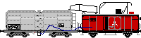
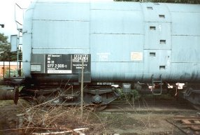

Krümelbahn
Krümelbahn
Öltankzug Kesselwagen Hannover259
Kesselwagen Hannover259
Kesselwagen Hannover259 (80 80 977 2 006-0) im Museum Darmstadt-Kranichstein [5-94]

Allgemeine Informationen
Das Vorbild war in Bebra von 1958 bis Mai 1963 im Einsatz.Als Zuglok fungierte eine Dampflokomotve der BR 56.2 (Umbau aus einer pr.G8.1/BR 55.25-56).
Der Pumpenwagen war im Original ein G02 mit der Betriebsnummer 102 173, der 4-achsige Kesselwagen ein Leichtbaudrehgestellkesselwagen Bauart Deutz (selbsttragender Kessel ohne durchgehenden Längsträger).
Eine umfangreiche Beschreibung ist erschienen in
- Bahn & Modell 2/89 (Seite 24 bis 26): Eisenbahn-Geschichte: Der Öltankzug des Bw Bebra
- der eigentlich benötigte G02 mit offenen bzw, zu öffnenden Türen nicht erhältlich ist. Es wird ein bauart-ähnlicher G10 verwendet.
- Ich habe für meinen Umbau einen Heizölwagen von Märklin verwendet, dieser ist aber so nicht mehr im Programm. Will man diesen Wagen einsetzen, ist man auf Gebrauchtwarenhändler angewiesen.
Bei Märklin ist unter Artikelnummer 47911 ein Bahndienstwagen "Feuerwehr" zu bekommen, der nach Umlackierung dem Heizölwagen entspricht. - Besser passt der - zur damaligen Bauzeit noch nicht erhältliche - Kesselwagen von Liliput mit der Artikelnummer 235985.
- Eisenbahn-Kurier Spezial 24: Bahnbetriebswerke (II)
- Miba-Report Dienstfahrzeuge 2 (Seite 53): Ölwagen im Modell
- Miba-Spezial 69 Bahnbetriebswerke (Seite 88f.): Eilige Ölung - Der Öltankzug von Bebra in Vorbild und Modell
- Der Modelleisenbahner 6/03, (Seite 38 bis 43): Aufgetankt

;){kind=link}
Baubeschreibung
 Kesselwagen
Kesselwagen;){kind=link}
 KesselwagenPumpenwagen
KesselwagenPumpenwagen;){kind=link}
 Pumpenwagen
Pumpenwagenin Betrieb seit: 02.1991
(Um)Bauanleitungen sind erschienen in:
- Bahn & Modell 2/89 (Seite 27 bis 32): Wir bauen den Tankzug von Bebra - in H0
- Eisenbahn-Kurier 1/92 (Seite 108 bis 111): Die zwei von der Tankstelle
- Miba-Spezial 69 Bahnbetriebswerke (Seite 88f.): Eilige Ölung - Der Öltankzug von Bebra in Vorbild und Modell
- Der Modelleisenbahner 6/03, (Seite 66 bis 79): Boxenstopp
- Die Firma Weinert bietet:
- unter der Nummer 3399(H0) bzw. 6995(N) einen Zurüstsatz für den Güterwagen G10 zum Bau des Bebraner Tankzugwagens; dieser Bausatz enthält den Ölkran, den schwenkbaren Laufsteg, das Betankungsrohr, Leiter und Laternen.
- Bauanleitungen hierzu:
- im Eisenbahn-Kurier 8/02 (Seite 122ff.): Tankzug Bebra - die mobile Tankstelle
- unter der Nummer 3399(H0) bzw. 6995(N) einen Zurüstsatz für den Güterwagen G10 zum Bau des Bebraner Tankzugwagens; dieser Bausatz enthält den Ölkran, den schwenkbaren Laufsteg, das Betankungsrohr, Leiter und Laternen.